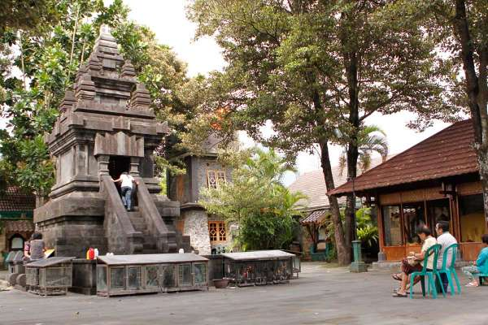

Ini adalah halaman agama
Dalam agama, kita belajar tentang Yesus. Saat edutrip, kita mengunjungi 2 gereja. Kedua gereja ini sangat indah. Kita juga melakukan jalan salib di Gereja Hati Kudus Yesus Ganjuran.

Gereja Maria Assumpta Pakem
Gereja pertama yang kami kunjungi adalah Gereja Maria Assumpta Pakem. Gereja ini memiliki patung Bunda Maria yang sangat terdekorasi dengan lilin, bel, dan sebuah well besar. Mereka mulai bangun gereja ini pada tahun 1924 dan selesai padaw tahun 1958. Mereka juga memiliki tempat outdoor untuk ikut misa jika dalam penuh.
Gereja Hati Kudus Yesus Ganjuran
Gereja kedua yang kami kunjungi adalah Gereja Hati Kudus Yesus Ganjuran yang terletak pada Jl. Ganjuran, Jogodayoh, Sumbermulyo, Kec. Bambanglipuro, Kabupaten Bantul, Daerah Istimewa Yogyakarta 55764. Suasana doa di gereja ini sangat tenang. Gereja ini sangat luas, sangat bersih, dan ada toko untuk panti asuhan. Gereja dapat memberikan manfaat ekonomi bagi masyarakat dengan adanya banyak kotak donasi sekitar gerejanya. Selain tempat beribadah, gereja ini juga tempat untuk bantu panti asuhan dengan tokohnya. Mungkin mereka dapat menambah layar dalam gedung gerejanya seperti Gereja Santo Laurensius.